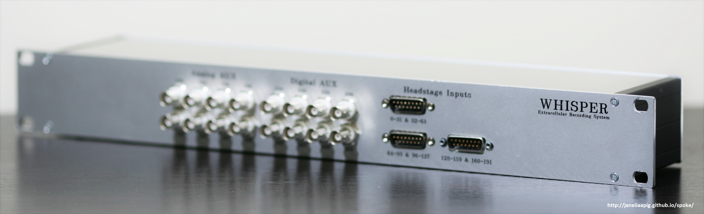
News
-
Spoke V1.0 has been released! Please download the latest version of Spoke using the links to the left.
-
IMEC probe support is possible in the future, please let us know if you have an interest in using Spoke with IMEC probes!
What is Spoke?
Spoke is a MATLAB app for live display of neural data from high-channel-count recording systems. It offers multiple experimenter-optimized display modes based on data reduction of high-channel-count data streams.
Spoke is designed around the Whisper extracellular recording system developed at HHMI/Janelia Research Campus in the APIG lab of Tim Harris and its accompanying [SpikeGLX] (https://github.com/billkarsh/SpikeGLX) neural recording software.
Spoke is developed & maintained by the APIG Lab at HHMI/Janelia Research Campus.
Hardware Requirements
Software Requirements
-
MATLAB 2015b
Note: If you already have a license for MATLAB, you can install MATLAB 2015b and simply register using your existing license. This is important since many users of MATLAB may have initially purchased newer versions of MATLAB. This will not prevent you from installing MATLAB 2015b and using Spoke. Spoke may work with later versions of MATLAB, but it's not guaranteed.
-
MATLAB Signal Processing Toolbox
-
National Instruments Measurement & Automation Explorer (NI MAX) (This is now a component of the full NI System Configuration (aka NI DAQmx) software suite.)
-
SpikeGLX, written and maintained by Bill Karsh. Spoke has been tested with the latest version of SpikeGLX (Release 20161201).
Note: You will need to start SpikeGLX and have an acquisition running prior to starting Spoke. Spoke requires a running SpikeGLX acquisition in order to operate properly.
Getting Started
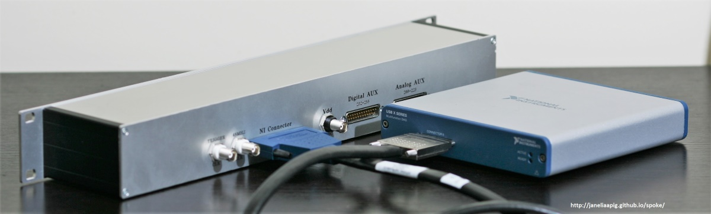
- Step 1: Connect the Whisper box to your NI Multifunction DAQ via the shielded cable.
- Step 2: Connect the Chronic Headstage to the Whisper box.
- Step 3: Start up SpikeGLX
- 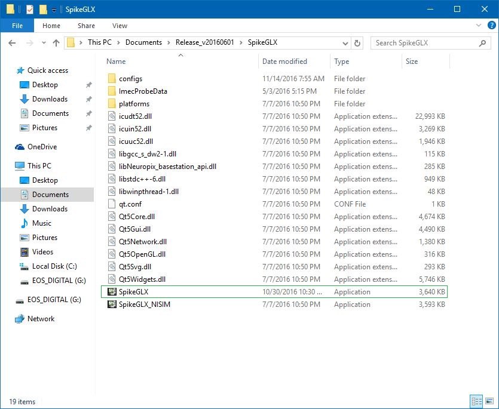
- 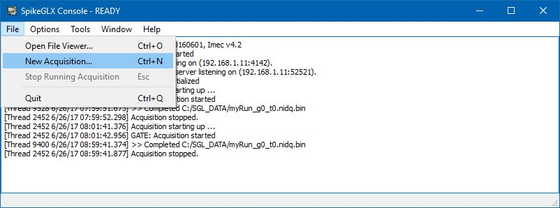
- 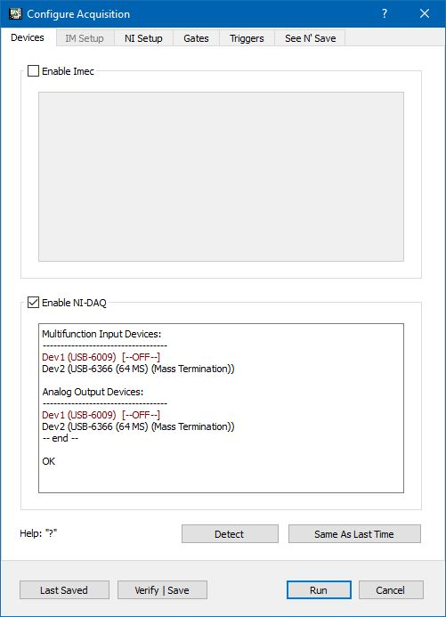
- 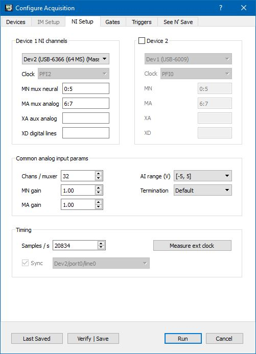
- 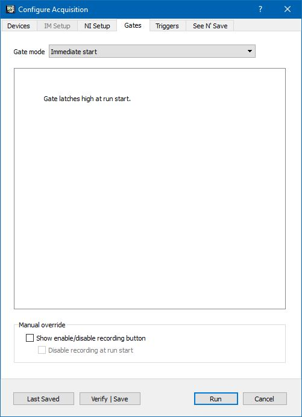
- 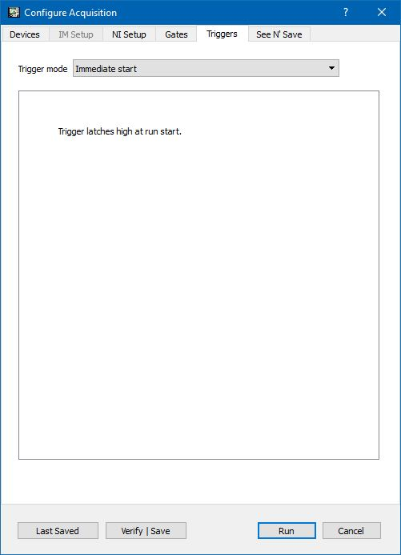
- 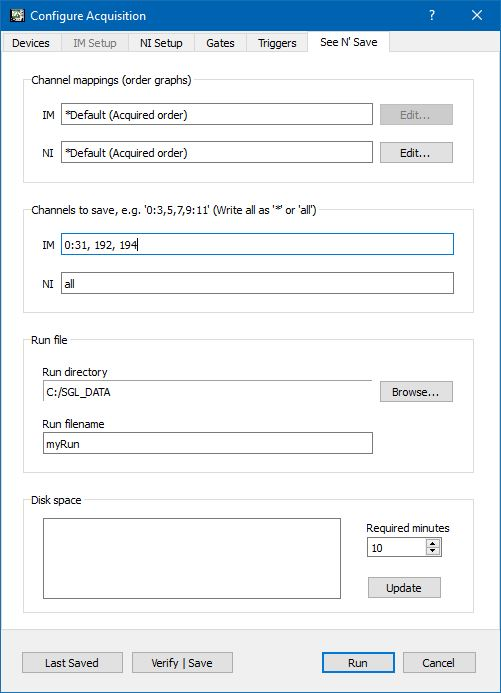
- Step 4: Start up Matlab
- Step 5: Start up Spoke
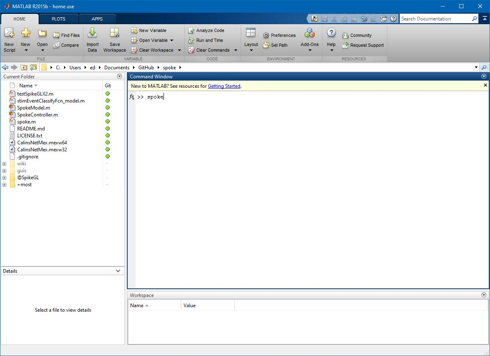
Spoke Controls
Running an Experiment
Help! Common Errors and How to Deal with Them
- 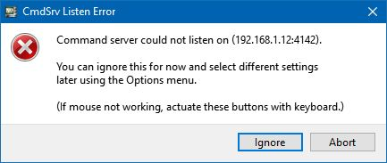
- 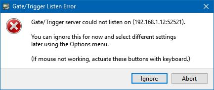
- 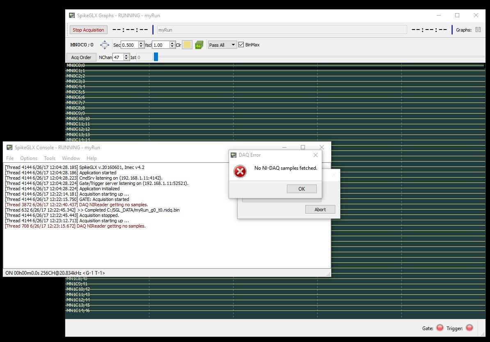
-
Warning: Connection refused (10061)
> In SpikeGL/ChkConn (line 13)
In SpikeGL (line 34)
In SpokeModel (line 242)
In spoke (line 25)
Warning: The following error was caught while executing 'SpokeModel' class destructor:
Undefined function 'isvalid' for input arguments of type 'double'.
> In spoke (line 25)
Error using SpikeGL/ChkConn (line 14)
Unable to connect to server. Please make sure SpikeGLX is running, and an acquisition has been started. If SpikeGLX is running on a separate machine, please specify the IP address.
Error in SpikeGL (line 34)
s = ChkConn( s );
Error in SpokeModel (line 242)
obj.hSGL = SpikeGL(sglIPAddress);
Error in spoke (line 25)
hSpoke = SpokeModel(ipAddress);
SpikeGLX is not currently running an acquisition. If SpikeGLX is running on a different host from the one running Matlab/Spoke, then you must specify the IP Address of the host running SpikeGLX when starting spoke:
spoke('192.168.1.10')
-
WARNING. A large number of queued-up samples to read detected: 1587. If intermittent, this should not cause a problem.
WARNING. A large number of queued-up samples to read detected: 16312. If intermittent, this should not cause a problem.
WARNING. A large number of queued-up samples to read detected: 14344. If intermittent, this should not cause a problem.
WARNING. A large number of queued-up samples to read detected: 14518. If intermittent, this should not cause a problem.
-